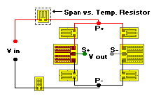
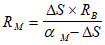
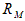
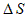
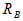
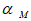
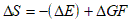
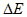
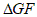

How to Compensate Span Shift with Temperature
Strain Gage Based Transducer reference
Compensation for span shift with temperature can be accomplished by inserting a temperature-sensitive (high-TC) resistor in the bridge excitation supply line. When the resistor is of the proper size and temperature sensitivity, it serves to vary the bridge voltage so as to counteract the temperature dependent changes in bridge output. With a temperature rise, for example, the bridge output for a particular load tends to rise also. This can be compensated for, however, if the resistance in the supply line increases simultaneously to produce an offsetting reduction in bridge voltage. The procedure for compensating span shift is usually the most difficult adjustment to make because it requires accurately loading the transducer and making measurements at two or more different temperatures.

Nickel resistors have been widely used for span shift compensation, but there has recently been considerable use of Balco, a very stable nickel-iron alloy with a relatively high temperature coefficient of resistance. Balco offers several advantages over pure nickel. It is less expensive, is easier to fabricate, and has about 2-1/2 times the resistivity of nickel. One of its few disadvantages is that it has a slightly lower temperature coefficient of resistance than nickel at typical transducer working temperatures (above -100 deg F, or -75 deg C). Given the TCR of the resistor material, and the rate of change of transducer output with temperature (both expressed in the same units, such as percent per degree), the nominal value of the span-shift compensation resistor can be calculated with the following relationship:

where:

= Resistance of span-shift compensation resistor
= Percent change in span per unit temperature change
= Bridge resistance
= Temperature coefficient of resistance of compensating resistor (in percent)For preliminary estimation of the required resistance, prior to running span tests, the change in span with temperature can be estimated from:

where:

= percent change in elastic modulus of the spring material per unittemperature change (normally negative)

= percent change in gage factor per unit temperature changeThe following Table gives nominal values of , , and which can be used the preceding equations for preliminary calculation of the compensating resistor.
Table
Material Properties Variations with Temperature
Modulus of Elasticity
| Spring Element
Material |
Temperature Coefficient of
Modulus |
| 17-4 PH stainless steel | -0.015%/deg F (-0.027%/deg C) |
| tool steel | -0.013%/deg F (-0.023%/deg C) |
| beryllium-copper | -0.025%/deg F (-0.045%/deg C) |
| aluminum | -0.030%/deg F (-0.054%/deg C) |
Gage Factor
| Gage Grid
Alloy |
Temperature Coefficient of
Gage Factor |
| constantan | +0.0050%/deg F (+0.0090%/deg C) |
| K-alloy (06 STC) | -0.0057%/deg F (-0.0103%/deg C) |
| K-alloy (13 STC) | -0.0083%/deg F (-0.0149%/deg C) |
Resistance
| Resistor
Material |
Temperature Coefficient of Resistance |
| nickel | +0.33%/deg F (+0.59%/deg C) |
| Balco | +0.24%/deg F (-0.43%/deg C) |
| copper | +0.22%/deg F (-0.40%/deg C) |
The preceding method will not generally result in precise compensation for span shift because of the approximate properties of the spring element, gages, and resistor alloys used in the calculations. Furthermore, readjustment of the compensation resistor will usually be required when the span-set or calibration resistor is inserted as described in the following section. The most practical approach is to determine the nominal resistance, and then select a C pattern resistor which has an initial, uncut resistance below the required value, and a fully cut resistance above it. By successive span-versus-temperature tests, the resistor can be adjusted to minimize the observed span changes. It is usually possible, with this procedure, to adjust span-shift-versus-temperature to less than 0.001% of signal per deg F (0.0018 % per deg C).